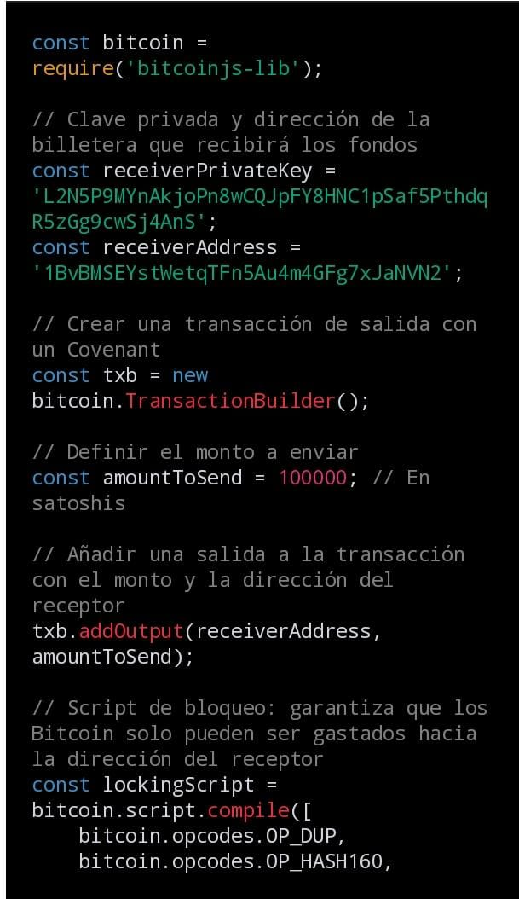
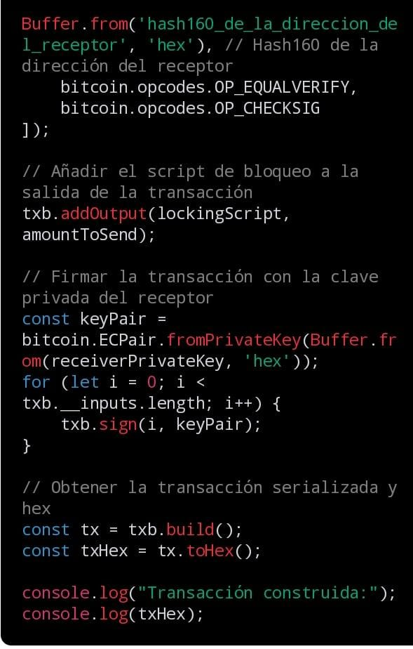

Desarrollo Blockchain
¡Bienvenidos a la sección de Desarrollo Blockchain en nuestra página web dedicada a Bitcoin y criptomonedas! Aquí exploraremos el apasionante mundo del desarrollo web y la tecnología blockchain. Si estás interesado en crear aplicaciones descentralizadas y contratos inteligentes, has llegado al lugar indicado. En esta sección, aprenderás sobre conceptos clave como Solidity, el lenguaje de programación utilizado para escribir contratos inteligentes en la red Ethereum. También te familiarizarás con la Máquina Virtual de Ethereum (EVM), el entorno en el que se ejecutan los contratos inteligentes. Además, te introduciremos a herramientas populares como Remix, un entorno de desarrollo integrado (IDE) que te permitirá escribir, probar y desplegar tus contratos inteligentes de manera eficiente. Prepárate para sumergirte en el emocionante mundo del desarrollo blockchain y descubre cómo puedes aprovechar estas tecnologías para construir el futuro de las aplicaciones web descentralizadas. ¡Acompáñanos en esta emocionante aventura y desata tu creatividad en el mundo de Bitcoin y criptomonedas!
Ethereum Virtual Machine

EVM
La Ethereum Virtual Machine (EVM) es el núcleo de la blockchain de Ethereum y uno de los logros técnicos más destacados en el mundo de las criptomonedas y contratos inteligentes. Es una máquina virtual Turing completa que ejecuta códigos de contrato inteligente en la red Ethereum. La EVM opera como un entorno de ejecución aislado y garantiza la seguridad y consistencia en la ejecución de contratos en toda la red.
Lo que hace que la EVM sea realmente especial es su capacidad para ejecutar contratos inteligentes, que son programas autónomos que pueden automatizar acuerdos y transacciones. La EVM procesa estos contratos inteligentes en un lenguaje de programación llamado Solidity, convirtiendo el código en acciones concretas en la blockchain de Ethereum. Esto ha abierto un mundo de posibilidades en áreas como las finanzas descentralizadas (DeFi), los juegos blockchain y la tokenización de activos.
La Ethereum Virtual Machine ha revolucionado la forma en que las aplicaciones descentralizadas (dApps) funcionan en la blockchain de Ethereum. Al proporcionar un entorno seguro y confiable para la ejecución de contratos inteligentes, la EVM ha allanado el camino para la innovación en blockchain y ha allanado el camino para un futuro en el que los intermediarios se vuelvan obsoletos en una amplia gama de industrias.
Creación de contratos inteligentes en la Red Blockchain de Ethereum con Solidity
Solidity
Solidity es un lenguaje de programación de alto nivel diseñado específicamente para el desarrollo de contratos inteligentes en la plataforma Ethereum. Su principal objetivo es permitir a los desarrolladores crear contratos autónomos y aplicaciones descentralizadas (dApps) de manera eficiente y segura en la blockchain de Ethereum. Una de las ventajas más destacadas de Solidity es su capacidad para traducir acuerdos y reglas de negocio en código ejecutable en la Ethereum Virtual Machine (EVM), lo que facilita la automatización de transacciones y la ejecución de acuerdos sin necesidad de intermediarios.
Una de las principales ventajas de Solidity es su accesibilidad. Está diseñado para que los programadores puedan escribir contratos inteligentes de manera más sencilla, sin necesidad de ser expertos en criptografía o teoría de blockchain. Esto ha democratizado el desarrollo en blockchain, permitiendo a una amplia gama de desarrolladores contribuir al ecosistema de Ethereum.
La innovación clave que Solidity aporta radica en su capacidad para ejecutar contratos sin confianza en la Ethereum Virtual Machine. Esto significa que las partes involucradas en un contrato pueden confiar en que el código se ejecutará según lo previsto, sin necesidad de intermediarios costosos y a menudo poco fiables. Además, Solidity permite la creación de tokens personalizados y contratos complejos, lo que ha impulsado el auge de las finanzas descentralizadas (DeFi) y otras aplicaciones blockchain avanzadas. En resumen, Solidity ha revolucionado el desarrollo en blockchain y ha allanado el camino para una nueva era de aplicaciones y servicios descentralizados.
Profesor Finech
Contratos Inteligentes (Smart Contracts)
Los "smart contracts" (contratos inteligentes) en la Ethereum Virtual Machine (EVM) son programas informáticos autónomos y autoejecutables que se ejecutan en la red Ethereum. Estos contratos están diseñados para automatizar y facilitar acuerdos, transacciones y procesos sin necesidad de intermediarios, como bancos o notarios. Aquí hay una explicación más detallada de lo que son y cómo funcionan:
- Programas Autónomos: Los smart contracts son como contratos tradicionales, pero están escritos en código informático. Están compuestos por una serie de reglas y condiciones que determinan cómo se deben ejecutar. Una vez que se desencadena una condición específica y se cumplen todos los requisitos, el contrato se ejecuta automáticamente, sin necesidad de intervención humana.
- Ejecución en la EVM: Ethereum utiliza la EVM para ejecutar estos smart contracts. La EVM es una máquina virtual Turing completa y se ejecuta en todos los nodos de la red Ethereum. Cada nodo verifica y ejecuta los contratos inteligentes, lo que garantiza la consistencia y la confiabilidad de las operaciones en toda la red.
- Transparencia y Seguridad: Los smart contracts son transparentes y se almacenan en la blockchain de Ethereum, lo que significa que su código y ejecución son visibles para cualquiera que quiera inspeccionarlos. Esto aumenta la confiabilidad y la seguridad, ya que se pueden auditar públicamente para detectar posibles problemas.
- Amplia Gama de Aplicaciones: Los smart contracts tienen una amplia gama de aplicaciones, desde tokens y sistemas de votación hasta aplicaciones financieras y de cadena de suministro. Pueden automatizar pagos, validar identidades, registrar la propiedad de activos digitales y mucho más.
- Tokens ERC-20 y ERC-721: Dos ejemplos notables de smart contracts en la EVM son los estándares ERC-20 y ERC-721, que permiten la creación de tokens fungibles (como criptomonedas) y tokens no fungibles (como tokens coleccionables o activos digitales únicos), respectivamente.
Los smart contracts en la Ethereum Virtual Machine son un pilar fundamental de la blockchain de Ethereum. Permiten la ejecución automática de acuerdos y procesos sin intermediarios, ofrecen transparencia y seguridad, y tienen aplicaciones en una amplia variedad de campos, desde las finanzas hasta la gestión de activos digitales y más allá.
Programación De Contratos Inteligentes Con Solidity
OpenZeppelin
OpenZeppelin es una plataforma líder en el mundo de los contratos inteligentes, la web 3 y la blockchain, que ha ganado reconocimiento por su enfoque en la seguridad y la confiabilidad en el desarrollo de aplicaciones descentralizadas (dApps). Ofreciendo un conjunto de herramientas y bibliotecas de código abierto, OpenZeppelin facilita a los desarrolladores la creación de contratos inteligentes y aplicaciones sobre blockchain, en particular, en Ethereum. Su enfoque se centra en proporcionar componentes y patrones sólidos que permiten a los equipos de desarrollo acelerar el proceso de creación, al tiempo que reducen el riesgo de vulnerabilidades y errores críticos en el código.
Uno de los mayores activos de OpenZeppelin es su biblioteca de contratos inteligentes estándar, que incluye elementos como tokens ERC-20 y ERC-721, lo que simplifica la creación de activos digitales y tokens fungibles y no fungibles. Además, sus estándares de seguridad son altamente respetados en la comunidad blockchain, lo que ayuda a los desarrolladores a mantenerse al tanto de las mejores prácticas en seguridad de contratos inteligentes. OpenZeppelin también ofrece una sólida infraestructura para el desarrollo web 3, permitiendo la conexión de dApps con wallets y facilitando la interacción de los usuarios con aplicaciones descentralizadas de manera segura.
OpenZeppelin ha demostrado ser un aliado confiable y esencial en el desarrollo de aplicaciones blockchain y contratos inteligentes. Su enfoque en la seguridad, la estandarización y el código abierto ha contribuido significativamente al crecimiento del ecosistema blockchain y ha permitido a los desarrolladores centrarse en la creación de soluciones innovadoras sin comprometer la integridad y la confiabilidad de sus proyectos.
DApps en la EVM: Desbloqueando el Potencial de Ethereum
Las DApps (Aplicaciones Descentralizadas) son uno de los conceptos más emocionantes y revolucionarios en el mundo de la tecnología blockchain, y su relación con la Ethereum Virtual Machine (EVM) es fundamental. Estas aplicaciones son programas de software que se ejecutan en una cadena de bloques descentralizada, lo que significa que no están controladas por ninguna entidad central. En lugar de ello, funcionan a través de contratos inteligentes, que son acuerdos autónomos y autoejecutables en la EVM. La EVM es la máquina virtual que impulsa Ethereum y permite la ejecución de contratos inteligentes. Actúa como un entorno de ejecución seguro y aislado para los contratos, lo que significa que, una vez desplegados en la cadena de bloques, los contratos funcionan de acuerdo con sus reglas programadas sin intervención humana. Esto proporciona una base sólida para las DApps, ya que garantiza un funcionamiento transparente y confiable. El ecosistema de DApps en la EVM es vasto y diverso. Incluye desde aplicaciones financieras, como intercambios descentralizados (DEX), hasta juegos y redes sociales. Lo más emocionante es que estas DApps están transformando industrias enteras, eliminando intermediarios y brindando a los usuarios un mayor control sobre sus datos y activos digitales. A medida que la tecnología blockchain sigue evolucionando y madurando, el potencial de las DApps en la EVM es ilimitado, y su adopción sigue creciendo, lo que promete un futuro verdaderamente descentralizado y empoderado.
QuickNode es un proveedor de servicios de infraestructura blockchain que ha ganado reconocimiento en la comunidad de criptomonedas y blockchain. Su enfoque principal es ofrecer nodos (nodos completos) y servicios de infraestructura para diversas redes blockchain populares, lo que facilita que los desarrolladores y las empresas ejecuten aplicaciones descentralizadas y accedan a datos de blockchain de manera eficiente.
Una de las características destacadas de QuickNode es su enfoque en la facilidad de uso y la accesibilidad. Ofrecen una variedad de nodos para redes blockchain como Ethereum, Bitcoin, Binance Smart Chain, y muchas otras. Esto permite a los usuarios acceder y desplegar nodos sin la necesidad de lidiar con la complejidad de configuración y mantenimiento. Además, QuickNode ofrece una interfaz de usuario intuitiva que simplifica la gestión de nodos, lo que es especialmente útil para desarrolladores y empresas que desean aprovechar la tecnología blockchain sin invertir en hardware costoso o dedicar tiempo a la administración técnica.
Otra ventaja de QuickNode es su red global de servidores que garantiza un alto rendimiento y confiabilidad. Los usuarios pueden elegir entre diferentes planes de suscripción según sus necesidades específicas, lo que les brinda flexibilidad en cuanto a capacidad y rendimiento. La infraestructura de QuickNode también es escalable, lo que permite a las empresas expandirse sin problemas a medida que sus operaciones de blockchain crecen.
QuickNode se ha convertido en una solución valiosa para aquellos que desean simplificar la implementación y el uso de la tecnología blockchain. Su enfoque en la facilidad de uso, la escalabilidad y el rendimiento ha hecho que sean una opción atractiva para desarrolladores, proyectos de blockchain y empresas que buscan aprovechar los beneficios de la tecnología blockchain sin las complicaciones técnicas.
Chainlink
Despliega tu Primer Contrato Inteligente en Polygon
Canal de Youtube Chainlink
BitVM
BitVM: Un puente entre los contratos inteligentes y la red Bitcoin
He aquí una noticia digna de mención para la comunidad Bitcoin, el desarrollador Robin Linus ha presentado recientemente un documento titulado "BitVM: Compute Anything on Bitcoin". En este artículo, Linus profundiza en un novedoso método para desplegar contratos inteligentes en Bitcoin sin modificar sus reglas de consenso establecidas.
Al igual que los rollups de Ethereum, BitVM está diseñado para permitir que los contratos inteligentes de Bitcoin funcionen fuera de la cadena, aunque se autentiquen en la cadena principal de Bitcoin. Esto allana el camino para una serie de aplicaciones potenciales, desde plataformas de juegos a mercados de predicción y puentes.
Pero, y siempre hay un pero. El modelo requiere una cantidad significativa de computación y comunicación fuera de la cadena, lo que indica que es esencial seguir investigando en profundidad antes de subirse al carro de BitVM.
En resumen, BitVM podría anunciar una fase prometedora para Bitcoin, posiblemente influyendo en su valor en futuros ciclos de mercado. Como siempre, el tiempo dirá cómo le va a esta innovación.
Explorando los Covenants en Bitcoin: Innovación en Contratos Inteligentes
Los Covenants en Bitcoin representan un avance significativo en la funcionalidad de las transacciones en la red de Bitcoin, introduciendo la capacidad de crear contratos inteligentes dentro del ecosistema de Bitcoin. En esencia, los Covenants permiten agregar condiciones a las transacciones de Bitcoin, lo que abre un abanico de posibilidades para diversos casos de uso.
¿Qué son los Covenants en Bitcoin?
Los Covenants son instrucciones adjuntas a las transacciones de Bitcoin que definen las condiciones bajo las cuales los fondos pueden ser gastados en el futuro. Estas condiciones pueden variar desde restricciones de tiempo hasta criterios específicos de desencadenamiento, lo que otorga un nivel adicional de seguridad y flexibilidad a las transacciones en la red de Bitcoin.
Casos de Uso de los Covenants en Bitcoin:
Fideicomisos y Herencias Digitales: Los Covenants pueden utilizarse para establecer condiciones específicas sobre cómo y cuándo se pueden gastar los fondos en un fideicomiso digital o en un plan de herencia, garantizando que los activos digitales se distribuyan según lo acordado.
Pagos Condicionales: Con los Covenants, es posible realizar pagos condicionales que requieran el cumplimiento de ciertas condiciones antes de que los fondos sean liberados. Esto es útil en escenarios de transacciones comerciales donde se pueden establecer hitos o condiciones de entrega antes de que se complete el pago.
Contratos Multifirmas Mejorados: Los Covenants permiten la creación de contratos multifirma más sofisticados, donde las partes involucradas pueden establecer condiciones específicas para la liberación de fondos, lo que agrega una capa adicional de seguridad y transparencia a las transacciones.
Seguros y Garantías: En el campo de los seguros y las garantías, los Covenants pueden utilizarse para automatizar los procesos de reclamación y liquidación, asegurando que los pagos se realicen de acuerdo con los términos y condiciones estipulados en el contrato.
Gestión de Fondos: Los Covenants pueden emplearse para gestionar fondos de manera más eficiente, permitiendo la creación de estructuras de financiamiento escalonadas o la implementación de mecanismos de control de gastos.
Los Covenants en Bitcoin representan una innovación significativa que amplía las capacidades de la red, brindando nuevas oportunidades para la creación de contratos inteligentes y la automatización de procesos financieros. Con su potencial para transformar la forma en que se realizan las transacciones en Bitcoin, los Covenants prometen desempeñar un papel crucial en la evolución del ecosistema financiero digital.
Para programar Covenants en Bitcoin, necesitas utilizar un lenguaje de script específico que permita definir las condiciones de gasto de tus bitcoins. En Bitcoin, esto se logra a través del uso de scripts de bloqueo (locking scripts) y scripts de desbloqueo (unlocking scripts), que determinan cómo se pueden gastar los fondos. Aquí hay algunos pasos básicos para programar Covenants en Bitcoin:
Comprender los Scripting en Bitcoin: Bitcoin utiliza un sistema de scripting que permite definir condiciones específicas bajo las cuales los fondos pueden ser gastados. Esto implica comprender los comandos y operadores disponibles en el lenguaje de scripting de Bitcoin.
Diseñar el Covenant: Decide las condiciones bajo las cuales deseas que tus bitcoins sean gastados. Esto puede incluir restricciones de tiempo, verificación de firmas múltiples, verificación de datos externos, entre otros.
Escribir el Script de Bloqueo y Desbloqueo: Utiliza un editor de texto o una herramienta especializada para escribir los scripts de bloqueo y desbloqueo que reflejen las condiciones del Covenant que deseas implementar.
Probar y Depurar: Es fundamental probar cuidadosamente tus scripts para asegurarte de que funcionen como se espera y no presenten vulnerabilidades o errores de seguridad.
Transacción y Implementación: Una vez que estés satisfecho con tus scripts, puedes incluirlos en una transacción de Bitcoin como parte del script de salida (output script), lo que establecerá las condiciones para gastar esos fondos en el futuro.
Es importante tener en cuenta que la programación de Covenants en Bitcoin puede ser compleja y requiere un profundo entendimiento del protocolo de Bitcoin y de los principios de seguridad de la criptografía. Además, ten en cuenta que no todos los wallets o billeteras de Bitcoin admiten la creación y gestión de Covenants, por lo que es posible que necesites utilizar herramientas específicas o realizar modificaciones en el software existente para habilitar esta funcionalidad.
Si estás interesado en implementar Covenants en tus bitcoins, te recomendaría estudiar detenidamente la documentación técnica de Bitcoin, explorar proyectos de código abierto relacionados con la programación de Covenants y, si es necesario, buscar la ayuda de desarrolladores con experiencia en Bitcoin y criptografía.
Aquí te presento un ejemplo básico de cómo programar un Covenant en Bitcoin utilizando el lenguaje de script de Bitcoin:
Supongamos que deseas crear un Covenant que requiere que dos de tres partes autorizadas firmen una transacción para gastar los fondos. Esto se conoce como un escenario de firma multifirma. El script de desbloqueo requerirá al menos dos de las tres firmas para desbloquear los fondos.
El script de bloqueo sería algo así:
OP_2
En este script:
OP_2 indica que se requieren al menos dos firmas.
Aquí tienes un ejemplo básico en JavaScript utilizando la biblioteca BitcoinJS para crear un Covenant donde los Bitcoin solo pueden ser gastados hacia una dirección específica:
 
En este ejemplo, la transacción se configura de tal manera que los Bitcoin solo pueden ser gastados hacia la dirección especificada receiverAddress. Esto se logra mediante la creación de un script de bloqueo que verifica que la dirección de destino coincida con la dirección especificada en el script. Una vez que se crea la transacción, se firma con la clave privada del receptor para autorizar el gasto de los fondos.
Recuerda reemplazar hash160_de_la_direccion_del_receptor con el hash160 de la dirección del receptor en formato hexadecimal y receiverPrivateKey con la clave privada del receptor en formato hexadecimal. Además, asegúrate de tener la biblioteca bitcoinjs-lib instalada en tu entorno de desarrollo para que el código funcione correctamente.
Jameson Lopp explica por qué Bitcoin debería incluir covenants
Se dividen las opiniones frente a una actualización que integraría covenants en Bitcoin
“Introducción a la Ciencia de Datos y Blockchain: desafíos y oportunidades”
Ciberseguridad y Vulnerabilidades en Blockchain: Protegiendo el Futuro Digital
En el mundo digital actual, donde la información y los activos virtuales son cada vez más valiosos, la ciberseguridad se ha convertido en una preocupación crítica. La tecnología blockchain, conocida por su seguridad inherente, no está exenta de amenazas. Numerosas vulnerabilidades y exposiciones han surgido a lo largo del tiempo, destacando la necesidad constante de una vigilancia rigurosa y medidas proactivas para proteger esta infraestructura digital revolucionaria.
Base de Datos de Vulnerabilidades y Exposiciones
La Base de Datos de Vulnerabilidades y Exposiciones es una herramienta esencial en el mundo de la ciberseguridad de blockchain. Proporciona un registro exhaustivo de vulnerabilidades conocidas y exposiciones en diferentes proyectos y redes blockchain. Esto permite a los desarrolladores y a la comunidad criptográfica estar al tanto de las amenazas potenciales y tomar medidas para solucionarlas antes de que se conviertan en problemas mayores.
BSCCheck y Detectores de Honeypot
Herramientas como BSCCheck y detectores de Honeypot desempeñan un papel crucial en la detección temprana de amenazas en blockchain. BSCCheck, por ejemplo, es una herramienta diseñada para analizar contratos inteligentes en la red Binance Smart Chain en busca de vulnerabilidades y debilidades de seguridad. Los detectores de Honeypot, por otro lado, son sistemas diseñados para atraer a posibles atacantes y revelar sus tácticas, lo que proporciona datos valiosos para mejorar la ciberseguridad. La ciberseguridad en blockchain es una batalla continua. La interconexión de sistemas y la creciente sofisticación de los atacantes hacen que la vigilancia constante sea esencial. La Base de Datos de Vulnerabilidades y Exposiciones, junto con herramientas como BSCCheck y detectores de Honeypot, son componentes críticos en la protección de esta tecnología disruptiva. A medida que blockchain continúa transformando industrias y sistemas financieros, la seguridad sigue siendo una prioridad,y estas herramientas son piezas clave en la construcción de un entorno digital más seguro y confiable.